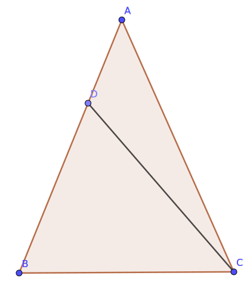

Euclid's elements, web version
This webpage follows the general scheme of Euclid's original work, while updating some of the terminology. Occasionally we might point out some of Euclid's inaccuracies, but we make no pretense to have a perfectly rigorous treatment; our main goal is ease of understanding for high school level students.
Primitive entities
Euclid defined these terms, but he never used these definitions. Therefore it's better to leave them undefined.
- Point
- Segment
- Plane
Note: we use the term "segment" instead of Euclid's "line".
Primitive relationships
These are also not explicitly declared by Euclid.
- Congruence
- Incidence
Definitions
Angle: pair of lines that contain a common point.
Right angle: angle formed by two lines that form equal angles. The lines are called perpendiculars.
Obtuse angle: an angle greater than a right angle.
Acute angle: an angle smaller than a right angle.
Circle: part of the plane contained by a circumference.
Circumference: the set of points that form congruent segments with a common point, called the center.
Rectilinear figure: part of a plane contained by segments, called sides.
Triangle: rectilinear figure with 3 sides. A triangle can be:
- Equilateral if it has 3 equal sides;
- Isosceles if it has two equal sides;
- Scalene if all the sides are different.
Quadrilateral: a rectilinear figure with 4 sides. Among these, we define:
- a square has all right angles and congruent sides;
- a rectangle has all right angles but unequal sides;
- a rhombus has congruent sides, but not all right angles;
- a rhomboid or parallelogram has opposite sides and angles congruent to one another.
Parallel segments belong to the same plane but any of their extensions don't have any points in common.
Postulates
- A pair of points defines a segment.
- A segment can always be extended.
- A circle with any center and radius exists (can be drawn).
- All right angles are congruent to each other.
- If a segment crosses two other segments and the sum of two angles on the same side is less than two right angles, then there exist extensions of the two segments that meet in a point on the same side; there's no such point on the other side.
Common notions
- Congruence is a transitive relationship.
- Given two pairs of congruent things, the sums across the pairs are congruent to each other.
- Given two pairs of congruent things, the differences across pairs are equal to each other.
- Congruence is a reflexive relationship.
- The whole is greater than the part.
Propositions
Hypothesis: a segment AB is given.
Thesis: an equilateral triangle exists that has AB as a side.
Proof:
- Construct the circle BCD with center A and radius AB (postulate 3).
- Construct the circle ACE with center B and radius BA (postulate 3).
- Postulate that circles BCD and ACE meet in a point C. Euclid skipped this step!
- Draw segments CA and CB.
- Since A is the center of circle CDB and AC and AB are it's radiuses, AC and AB are congruent (definition of circumference)
- Since B is the center of circle ACE and BC and BA are it's radiuses, BC and BA are congruent (definition of circumference)
- We know that AC ≅ AB and BC ≅ BA; but AB ≅ BA (common notion 4), therefore by common notion 1 we know that all three segments are congruent.
- Therefore, the triangle ABC is equilateral. QED

Hypothesis: let A be a given point, and BC a given segment.
Thesis: there exists a straight line AD congruent to BC.
Proof:
- Construct an equilateral triangle ABC on segment AB (proposition 1).
- Extend AE and BF from segments DA and DB (postulate 2).
- Draw the circle CGH with center B and radius BC (postulate 3).
- Draw the circle GKL with center D and radius DG (postulate 3).
- As D is the center of GKL, DL is congruent to DG (definition of circumference).
- given AD ≅ BD and DL ≅ DG, we have the differences AL ≅ BG (common notion 3).
- BC and BG are radiuses of CGH; therefore they are congruent (definition of circumference)
- As AL ≅ BG and BC ≅ BG, by common notion 1 we have AL ≅ BC. QED

Hypothesis: let AB and C be two given non-congruent segments, with AB longer than C.
Thesis: it's possible to subtract a segment congruent to C from AB.
Proof:
- Using proposition 2, construct a segment AD congruent to C.
- Build the circle DEF with center A and radius AD (postulate 3).
- Postulate that AB meets the circle in a point E
- By the definition of circumference, AD ≅ AE.
- From AD ≅ AE and C ≅ AD, we conclude that AE ≅ C (common notion 1). QED

Hypothesis: let ABC be an isosceles triangle with side AB congruent to AC; let segment BD and CE be the extensions of AB and AC respectively (Postulate 2).
Thesis: angles ABC ≅ ACB and CBD ≅ BCE.
Proof:
- Let F be any point on BD.
- Use proposition 3 to construct AG on AE, such that AG ≅ AF.
- Draw lines FC and GB (postulate 1).
- Since AF ≅ AG and AB ≅ AC, and the common angle A ≅ A, by proposition 4 we have the triangles AFC ≅ AGB.
- Since AF ≅ AG and AB ≅ AC, by common notion 3 the differences BF ≅ CG.
- Now we know that FC ≅ GB, BF ≅ CG, and the angles BFC ≅ CGB; thus by proposition 4, the triangles BFC ≅ CGB.
- Thus, the angles FBC ≅ GCB, and BCF ≅ CBG.
- Since ABG ≅ ACF, within which CBG ≅ BCF, their differences ABC ≅ ACB (common notion 3).
- We found FBC ≅ GCB, as well as ABC ≅ ACB. QED

Hypothesis: let ABC be a triangle with ABC ≅ ACB.
Thesis: the sides AB ≅ AC.
Proof:
- Suppose that the thesis is false (reductio ad absurdum): if AB and AC are not congruent, then one must be larger than the other (Note: here Euclid is assuming an order relationship between segments that constitutes an implicit axiom)
- Without loss of generality, assume AB > AC (if this is not the case, the points should be relabeled to make it happen).
- Construct the point D on AB such that DB ≅ AC (using proposition 3.
- Draw the segment DC (postulate 1).
- DB ≅ AC (by construction), BC ≅ CB (by common notion 4) and the angles DBC ≅ ACB. Thus by proposition 4, we have the triangles DBC ≅ ACB.
- But by common notion 5, the part cannot be greater than the whole (Euclid is a bit generic here. What does he mean exactly by part?), therefore we have arrived at a contradiction.
- Thus AB is not unequal to AC; therefore AB ≅ AC. QED

Hypothesis: let AB be the given segment; let AC ≅ AD and BC ≅ BD.
Thesis: C and D are the same point.
Proof:
- Draw segment CD (postulate 1).
- AC ≅ AD; thus by proposition 5, then angles ACD ≅ ADC.
- By common notion 5, angles ACD > DCB (if it isn't, exchange the labels).
- Putting together the previous points, we have ADC > DCB.
- Similarly, CDB > DCB.
- By definition, CB ≅ DB; therefore by proposition 5, the angles CDB ≅ DCB.
- We have proved that CDB > DCB, but also that CDB ≅ DCB. This is a contradiction!
- Therefore, it cannot be that C and D are different points. Thus, they must be the same point. QED

Hypothesis: let ABC and DEF be two triangles such that AB ≅ DE, AC ≅ DF, BC ≅ EF.
Thesis: angles BAC ≅ EDF. (congruence can be proved for other angle pairs in the same way.)
Proof:
- On the segment EF, construct a triangle EFG that is congruent with ABC, such that G is on the same side of EF as D. (one should first prove that building such a triangle is possible.)
- By proposition 7, G must be the same point as D.
- Since G and D are the same point, by postulate 1 it must be that DE and GE coincide, as well as DF and GF.
- Therefore, by the definition of angle, the angles EGF and EDF coincide and are therefore congruent (common notion 4)
- But angles BAC ≅ EGF; therefore by common notion 1, we have BAC ≅ EDF. QED
Hypothesis: let BAC be a given angle.
Thesis: a segment can be constructed that divides it in two congruent angles.
Proof:
- Take any point D on AB.
- Construct AE on AC, such that AE ≅ AD (proposition 3).
- Draw the segment DE (postulate 1).
- Construct an equilateral triangle DEF on DE (proposition 1)
- Draw the segment AF (postulate 1).
- Since AD ≅ AE (by construction), AF ≅ AF (by common notion 4) and DF ≅ EF (by construction), the angles DAF ≅ EAF (proposition 8).
- Therefore, the segment AF splits the angle DAE in two congruent parts. QED
Hypothesis: let AB be a given segment.
Thesis: AB can be divided in half.
Proof:
- Construct an equilateral triangle ABC upon AB (proposition 1).
- Bisect the angle ACB by the segment CD (proposition 9).
- AC ≅ BC by construction, CD ≅ CD by common notion 4, angles ACD ≅ BCD; using proposition 4, we have AD ≅ BD.
- Thus, D divides AB in two equal parts. QED
Hypothesis: let AB be the given segment, and C the given point lying on AB.
Thesis: we can draw a segment from C that forms right angles with AB.
Proof:
- Draw D as any point on AC.
- Draw E on CB such that CE ≅ CD (proposition 3).
- Construct the equilateral triangle FDE on DE (proposition 1).
- Draw the segment FC (postulate 1).
- Since DC ≅ CE and CF ≅ CF and DF ≅ EF, by proposition 8 we have the angles DCF ≅ ECF.
- DCF ≅ ECF are formed by the same two lines; thus by the definition of right angles, they are right angles.
- Segment CF forms right angles with segment AB at point C. QED
Hypothesis: let AB be the given infinite straight line, and C the given point, lying outside of AB.
Thesis: we can draw a segment perpendicular to AB with an extreme in C.
Construction:
- Let D be any point of the plane, lying on the opposite side of AB as C (how do we know that an infinite line divides the plane in sides?).
- Draw the circle EFG with center C and radius CD (postulate 3).
- The circle intersects AB in two points E and G, but this does not seem to follow from Euclid's axioms.
- Bisect EG by point H (proposition 10).
- Draw lines CG, CH and CE (postulate 1).
- We will prove that CH is perpendicular to AB.
Proof:
- GH ≅ HE (by construction), HC ≅ HC (C.M. 4) and CG ≅ CE (by the definition of circumference); thus using proposition 8, we have the angles CHG ≅ CHE.
- Angles CHG and CHE are congruent and formed by the same segments; thus by definition, they are right angles; further, the line CH is perpendicular to GE
- We found CH ⊥ AB, with an extreme in C. QED
Hypothesis: let segment AB have the extreme B on segment CD, forming angles CBA and ABD.
Thesis: CBA and ABD are either right angles, or have a sum equal to two right angles.
Proof:
- If CBA ≅ ABD, then they are right angles by definition.
- If they aren't congruent, then construct the segment BE perpendicular to CD from point B ()
- By construction, CBE and EBD are right angles.
- Re-label the points such that angle CBE is the sum of CBA and ABE.
- By C. N. 2, the sum of CBE and EBD is equal to the sum of CBA, ABE and EBD.
- DBA is the sum of DBE and EBA (Why?).
- By C. N. 2, the sum of DBA and ABC equals the sum of DBE, EBA and ABC.
- We have proved that DBE + EBC and DBA + ABC are equal to the same thing; thus by C. N. 1, they are equal to each other.
- We have proved that the sum of CBA and ABD is equal to two right angles. QED
Hypothesis: Let BC and BD form angles ABC and ABD with AB; ABC + ABD equals two right angles.
Thesis: BD and CB are extensions of each other.
Proof:
- Assume that BD is not an extension of BC (reductio ad absurdum).
- Construct BE as the extension of BC (postulate 2).
- Since AB stands on the segment CBE, by proposition 13 we have angles ABC + ABE equal two right angles.
- By hypothesis, ABC + ABD equals two right angles, and we just proved that ABC + ABE equals the same thing; thus by C. N. 1, ABC + ABD = ABC + ABE.
- Subracting ABC from both sides, we have from C. N. 3 that ABD = ABE.
- But by C. N. 5, this is impossible.
- Since we have arrived at a contradiction, we can conclude that we can't construct an extension of CB that is distinct from BD.
- Therefore BD is the extension of CB. QED
Hypothesis: let segments AB and CD intersect in point E.
Thesis: angles AEC ≅ DEB, CEB ≅ AED.
Proof:
- Since segment AE has an extreme on CD, the angles CEA and AED it forms equal two straight angles when summed (proposition 13).
- Similarly, DE has an extreme on AB, making angles AED and DEB have a sum of two right angles (proposition 13).
- Thus by C. N. 1, we have AEC + AED ≅ AED + DEB.
- Using C. N. 3, we can subtract AED from both sides, obtaining AEC ≅ DEB.
- In the same way, it can be shown that CEB ≅ DEA.
- AEC ≅ DEB and CEB ≅ DEA. QED